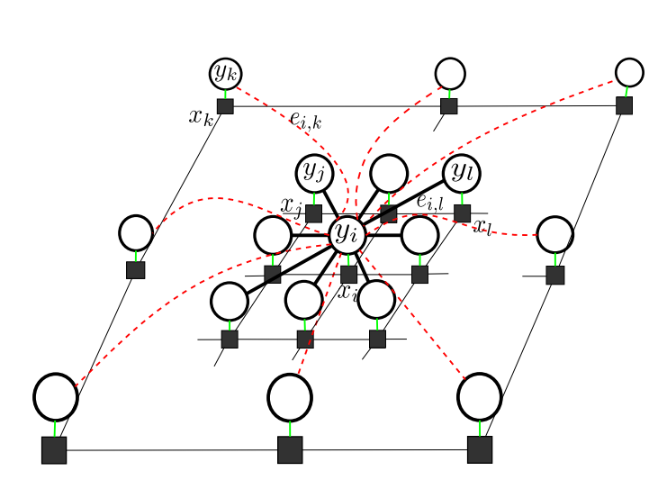

Random fields have remained a topic of great interest for decades for the purpose of structured inference, especially for problems such as image segmentation. The local nodal interactions commonly used in such models often suffer the short-boundary bias problem, which are tackled primarily through the incorporation of long-range nodal interactions. However, the issue of computational tractability becomes a significant issue when incorporating such long-range nodal interactions, particularly when a large number of long-range nodal interactions (e.g., fully-connected random fields) are modeled. In this work, we introduce a new random field formation framework, called randomly-formed conditional random fields (RCRFs), which is aimed at tackling the issue of computational tractability when using fully-connected random fields. Grounded in random graph theory, a fully-connected random field is modeled as a random graph, and the sparse representation of the random field is formed stochastically as realizations of the random graph. The proposed RCRF allows for efficient structured inference using fully-connected random fields while preserving modeling accuracy as well as relaxes restrictions on the types of potential functions that can be utilized. Experimental results demonstrate that the proposed framework can provide competitive performance for the purpose of figure-ground segmentation when compared to existing fully-connected and principled deep random field frameworks while requiring only a modest run-time.
Graph G is the realization of the SFCRF. The edges in G(.) are randomly sampled, thus G is a realization of a random graph. Based on the Erdos–-R'enyi theorem if the probability p of the random graph G' we introduce a new random field formation framework, called randomly-formed conditional random fields (RCRFs), which is aimed at we introduce a new random field formation framework, called randomly-formed conditional random fields (RCRFs), which is aimed at is greater than logn/n the graph is connected with a high probability. As a result, the proposed graph G(.) is connected, has at least n-1 edges even for large values of γ, and satisfies a Gibbs distribution.
To test the effectiveness of the proposed framework, we compared our proposed SFCRF against two other CRFs of different neighborhood sizes. Of the two compared approaches, the first is a regular CRF with adjacent neighbors (CRF-N3) where each node is connected to its closest eight neighbours (those within a 3 × 3 block); the second model, CRF-N11, has a larger neighborhood, where each node is connected to its closest 120 neighbors (those within an 11 × 11 block). The exact number of pairwise cliques of CRF-N3 is 1.38 × 106 (8 pairwise cliques per node) and of CRF-N11 is 2.07 × 107(120 pairwise cliques per node).
SFCRF was shown to provide significant improvements in segmentation accuracy, there were still limitations with the preservation of fine structure boundaries. To address these limitations, we propose a new approach to stochastic clique formation for fully connected random fields (G-SFCRF) that is guided by the structural characteristics of different nodes within the random field. In particular, fine structures surrounding a node are modeled statistically by probability distributions, and stochastic cliques are formed by considering the statistical similarities between nodes within the random fields. Experimental results show that G-SFCRF outperforms existing fully connected CRF frameworks, SFCRF, and the principled deep random field framework for image segmentation.
While the computational complexity of the inference
process is greatly reduced, the computational complexity
of forming stochastic cliques is relatively high,
thus resulting in a relatively higher overall computational complexity
compared to the first direction. Second, to reduce the computational
complexity of forming stochastic cliques, a weak
spatial proximity is imposed when forming the stochastic
cliques, in which nodal interactions are formed with decreasing
probability with increasing spatial distance.
we are inspired by fundamental work in graph sampling and random graph theory where it
was shown theoretically that a dense graph may be greatly
sparsified while retaining informational content by treating
the dense graph as a random graph. In the proposed framework,
which we will call randomly-formed conditional random fields (RCRF),
a fully-connected random field is modeled as a random graph and
sparse representations of the random field are formed stochastically
as realizations of the random graph. The randomly-formed conditional random
field is globally sparse with a strong balance of local and
long-range relationships that retain informational content and
as such retain the modeling power of the fully-connected
random field.
Experimental results demonstrate that the proposed framework can
provide competitive performance for the purpose of figure-ground
segmentation when compared to existing fully-connected and
principled deep random field frameworks while requiring
only a modest run-time.

- @article{shafiee2015forming,
title={Forming A Random Field via Stochastic Cliques: From Random Graphs to Fully Connected Random Fields},
author={Shafiee, Mohammad Javad and Wong, Alexander and Fieguth, Paul},
journal={arXiv preprint arXiv:1506.09110},
year={2015}}
- @inproceedings{shafiee2015improved,
title={Improved fine structure modeling via guided stochastic clique formation in fully connected conditional random fields},
author={Shafiee, MJ and Chung, AG and Wong, A and Fieguth, P},
booktitle={Image Processing (ICIP), 2015 IEEE International Conference on},
year={2015},
organization={IEEE}}
- @inproceedings{shafiee2014efficient,
title={Efficient bayesian inference using fully connected conditional random fields with stochastic cliques},
author={Shafiee, MJ and Wong, A and Siva, P and Fieguth, P},
booktitle={Image Processing (ICIP), 2014 IEEE International Conference on},
year={2014},
organization={IEEE}}